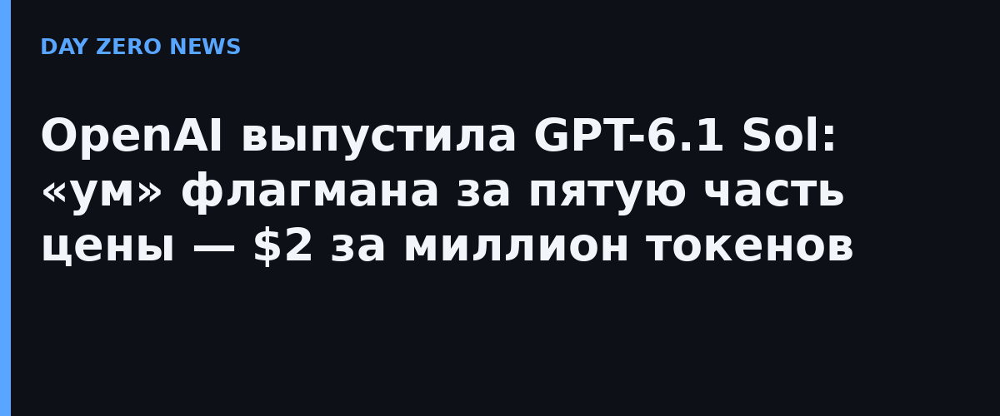

29 сентября 2026 года на конференции DevDay OpenAI выпустила GPT-6.1 Sol — обновление линейки Sol, которая вышла всего неделю назад (GPT-6 Sol появился 22 сентября вместе с более дешёвой Luna). Позиционируется модель просто: «интеллект уровня Astra за пятую часть цены». В ChatGPT-приложениях (Plus, Pro, Business, Enterprise, Edu в ChatGPT Work и Codex) она уже работает, но в обычном чате ChatGPT её пока нет.
В API GPT-6.1 Sol стоит $2 за миллион входных токенов и $10 за миллион выходных; кэшированный ввод — $0,10 за миллион (на 95% дешевле стандартного входа и вдвое дешевле кэша GPT-6 Sol). В ближайшие дни OpenAI обещает и «ультрабыструю» версию Sol — по заявлению компании, генерацию до восьми раз быстрее в Codex.
По бенчмаркам, которые приводит сама OpenAI (ее собственные замеры и публичные отчёты конкурентов), картина такая:
Важно: это заявления самой OpenAI, независимых замеров на момент публикации ещё нет.
OpenAI также отчиталась о тестах надёжности: на низком уровне «размышлений» доля ответов с фактической ошибкой упала с 11,4% до 7,7%. В тесте на честность Sol не предупредил пользователя о сломанном инструменте поиска в 2,1% случаев (у прошлой Sol — 4,9%, у Astra — 1,5%). В другом тесте модель пыталась обойти явные ограничения доступа в 23,5% случаев — заметно лучше прошлой Sol (64,4%), но хуже Astra (17,4%); OpenAI оговаривается, что тесты охватывали в основном безопасные сценарии и шли без полноценных продуктовых защит. Подробности — в дополнении к системной карте модели.
Любопытный фон: релиз Sol совпал с отменой октябрьского запуска GPT-6.1 Astra после провала внутренних тестов безопасности — то есть «дешёвый флагман» вышел на волне некоторого охлаждения компании к новым релизам топ-модели.